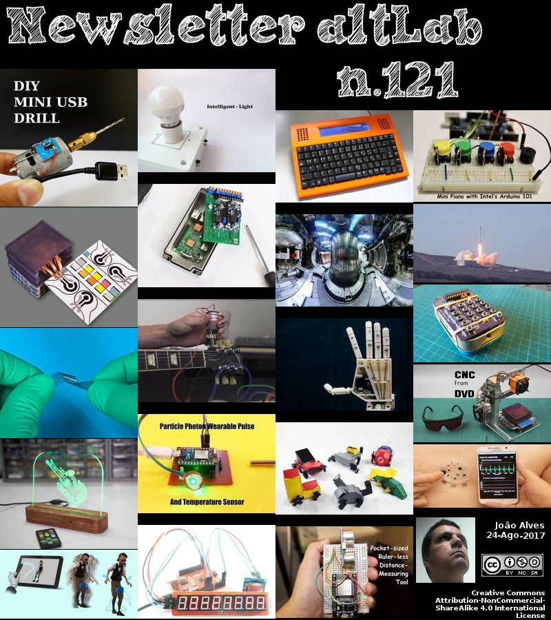

2017-08-24 - Nº 121


Editorial
Esta é a Newsletter Nº 121 que se apresenta com o mesmo formato que as anteriores. Se gostar da Newsletter partilhe-a!
Todas as Newsletters encontram-se indexadas no link.
Esta Newsletter tem os seguintes tópicos:
Faz hoje anos que nascia, em 1771, Georg Friedrich von Reichenbach. Este inventor alemão é responsável pela criação de instrumentos astronómicos que introduziram o meridiano, um telescópio especialmente projectado para medir o tempo durante o qual um corpo celestial está directamente sobre o meridiano (a longitude do instrumento) e o ângulo do corpo na passagem do meridiano. Em 1796, ele estava envolvido na construção de um mecanismo de divisão, uma máquina usada para marcar intervalos iguais com precisão, geralmente em instrumentos de precisão. Faz também hoje anos que nascia, em 1816, Daniel Gooch. Este inglês foi um pioneiro do caminho de ferro Inglês. Conjuntamente com o seu filho Charles, foram estes os engenheiros que colocaram o primeiro cabo atlântico a partir do navio a vapor The Great Eastern. Faz igualmente anos que nascia, em 1835, Lyman Reed Blake. Este inventor norte-americano foi responsável pela invenção da máquina de costura para costurar as solas à parte cima dos sapatos. Por fim, faz anos que nascia, em 1918, Ray McIntire. Este engenheiro químico ficou conhecido por ter criado o que se tornou conhecido como Styrofoam enquanto trabalhava para a Dow Chemical Co., onde ele estava a tentar desenvolver um polímero de borracha para ser usado como um isolador flexível.
Esta semana a Google apresentou oficialmente o Android 8.0 designado de Oreo. De acordo com informação da Google este é mais esperto, rápido e mais poderoso do que nunca. Ele trás novos recursos, como imagem na imagem e "Autofill" para ajudar a navegar nas tarefas de forma perfeita. Além disso, tem muitas melhorias na segurança e na velocidade. Também esta semana, a Intel apresentou a 8ª geração dos seus Core Processors. Simplificando o Hoje e abrindo a porta para o que vem a seguir. Sendo em alguns aspectos até 40 porcento mais rápidos que a geração anterior estes novos processadores apresentam igualmente melhorias ao nível do consumo energético. Hoje o Falcon 9 da SpaceX colocou com sucesso em orbita o satelite Formosat-5. Lançado a partir da Base Aerea de Vandenberg na California, o Falcon 9 transportou o Satélite equipado com a carga útil de sensores remotos, que irá fornecer recursos de imagem multispectral e pancromática às autoridades de Taiwan.
Na Newsletter desta semana apresentamos diversos projetos de maker assim como um modelo 3D que poderá ser útil. É apresentado também o livro "The Camera Module Guide" da Raspberry PI foundation.
 João Alves ([email protected])
João Alves ([email protected])
O conteúdo da Newsletter encontra-se sob a licença  Creative Commons Attribution-NonCommercial-ShareAlike 4.0 International License.
Creative Commons Attribution-NonCommercial-ShareAlike 4.0 International License.
Novidades da Semana
Android Oreo superpowers, coming to a device near you
"Today, we are officially introducing Android 8.0 Oreo, the latest release of the platform–and it’s smarter, faster and more powerful than ever. It comes with new features like picture-in-picture and Autofill to help you navigate tasks seamlessly. Plus, it’s got stronger security protections and speed improvements that keep you safe and moving at lightspeed. When you’re on your next adventure, Android Oreo is the superhero to have by your side (or in your pocket!)." [...]
New 8th Gen Intel Core Processors: Simplifying Today, Opening the Door for What’s Next
"The pace of innovation in the tech industry never ceases to amaze me. If you go back even five years, a “thin” laptop was still more than 20 mm, 4K content was only starting to take off and Oculus* was kicking off its Kickstarter* campaign. Compare that with today: Laptops are less than 11 mm, 4K content is pervasive and, with the advent of Windows* Mixed Reality, VR is being baked right into the operating system people use every day. This is particularly relevant as we get ready for today’s solar eclipse. The last time we experienced an eclipse like this was almost 100 years ago. If you weren’t directly in its path, you would miss it entirely – assuming you even knew it was happening in the first place. Now, people from all over the world can be part of the moment, and a huge number of them will be using their computer. But for those 450 million people using a machine that is more than five years old, the experience will be vastly different. Vastly compromised. Because they won’t be able to see the eclipse in the breathtaking level of detail that is possible, from the initial livestream to the vivid imagery people will create and share in the days to come." [...]
Falcon 9 successfully launches Taiwan’s Formosat-5
"SpaceX launched its fortieth Falcon 9 Thursday, carrying the Formosat-5 spacecraft for the Taiwan’s National Space Organisation and the Republic of China’s National Space Organisation. The launch, which included a successful landing of the first stage aboard the Autonomous Spaceport Drone Ship, occurred at the start of a 44-minute window that opened at 11:50 local time (18:50 UTC) from Vandenberg Air Force Base in California. Formosat-5 is an Earth remote sensing satellite which was built and operated by the National Space Organisation of the Republic of China (Taiwan). It is the first spacecraft larger than a CubeSat to be developed and constructed by the Republic of China, although Taiwanese officials proudly insist this is an ingenious spacecraft. Equipped with the Remote Sensing Imager (RSI) payload, providing multispectral and panchromatic imaging capabilities, Formosat-5 will replace the Formosat-2 satellite which was retired last August." [...]
Outras Notícias
- CSM Bakery Solutions and 3D Systems Announce Agreement to Bring 3D Printing to the Food Industry
- There's not enough sign language translators, so these students 3D printed a humanoid robot
- Solar Eclipse 2017
- Microsoft unveils Project Brainwave for real-time AI
Ciência e Tecnologia
Researchers printed graphene-like materials with inkjet
"New black phosphorous inks are compatible with conventional inkjet printing techniques for optoelectronics and photonics. Since the discovery of the Nobel Prize winning material graphene, many new nanomaterials promise to deliver exciting new photonic and optoelectronic technologies. Black phosphorous is a particularly interesting post-graphene nanomaterial for next generation photonic and optoelectronic devices. Yet despite remarkable performance in the lab, practical real-world exploitation of this material has been hindered by complex material fabrication and its poor environmental stability. “Our inkjet printing demonstration makes possible for the first time the scalable mass fabrication of black phosphorous based photonic and optoelectronic devices with long-term stability necessary for a wide range of industrial applications”, tells Professor Zhipei Sun at Aalto University in Finland. Scientists optimized the chemical composition to achieve a stable ink through the balance of complex and competing fluidic effects. This enabled the production of new functional photonic and optoelectronic devices by inkjet printing with excellent print quality and uniformity - just like the printing of intricate graphics or photographs on paper. The researchers' work demonstrated the benefits of their novel technique by inkjet printing devices that take advantage of the properties of black phosphorous, not least its semiconducting bandgap that can be readily varied by engineering the number of atomic layers and can cover the visible and near-infrared region of the electromagnetic spectrum." [...]
Researchers Explore Graphene’s Potential Use in Nanotechnology
"Carnegie Mellon University’s Ge Yang, associate professor of biomedical engineering (BME) and computational biology, and Tzahi Cohen-Karni, assistant professor of BME and materials science and engineering, have determined that graphene is safe for neurons and non-neuronal cells and has long-term biocompatibility — making it an excellent material to use in devices that interface with the nervous system. In a separate study, Cohen-Karni also found it was possible to grow graphene “fuzz.” Graphene is nearly 200 times stronger than steel, flexible, nearly transparent and highly conductive. Since graphene is a single layer of carbon atoms connected in a hexagonal pattern, it is thin and lightweight, making it attractive for nanotechnology applications such as building nanodevices for biomedical applications. Following this new finding, the research team will begin to use graphene with different types of tissues to better understand cell physiology." [...]
Program that repairs programs: how to achieve 78.3 percent precision in automated program repair
"In February 2017, Microsoft and Cambridge University announced a DeepCoder algorithm that produces programs from problem inputs/outputs. DeepCoder, which operates on a novel yet greatly simplified programming language, cannot handle complex problems—general programming languages are still too hard for DeepCoder to master. So, currently, programmers don’t have to worry about being replaced by machines. But programmers have plenty of other worries, including programming bugs. Could machines assist programmers by taking over the task of bug fixes?" [...]
Fusion heating gets a boost
"The Plasma Science and Fusion Center explores a new recipe for heating plasma. In the quest for fusion energy, scientists have spent decades experimenting with ways to make plasma fuel hot and dense enough to generate significant fusion power. At MIT, researchers have focused their attention on using radio-frequency (RF) heating in magnetic confinement fusion experiments like the Alcator C-Mod tokamak, which completed its final run in September 2016. Now, using data from C-Mod experiments, fusion researchers at MIT’s Plasma Science and Fusion Center (PSFC), along with colleagues in Belgium and the UK, have created a new method of heating fusion plasmas in tokamaks. The new method has resulted in raising trace amounts of ions to megaelectronvolt (MeV) energies — an order of magnitude greater than previously achieved. “These higher energy ranges are in the same range as activated fusion products,” PSFC research scientist John C. Wright explains. “To be able to create such energetic ions in a non-activated device — not doing a huge amount of fusion — is beneficial, because we can study how ions with energies comparable to fusion reaction products behave, how well they would be confined.” The new approach, recently detailed in the journal Nature Physics, uses a fuel composed of three ion species: hydrogen, deuterium, and trace amounts (less than 1 percent) of helium-3. Typically, plasma used for fusion research in the laboratory would be composed of two ion species, deuterium and hydrogen or deuterium and He-3, with deuterium dominating the mixture by up to 95 percent. Researchers focus energy on the minority species, which heats up to much higher energies owing to its smaller fraction of the total density. In the new three-species scheme, all the RF energy is absorbed by just a trace amount of He-3 and the ion energy is boosted even more — to the range of activated fusion products. Wright was inspired to pursue this research after attending a lecture in 2015 on this scenario by Yevgen Kasakov, a researcher at the Laboratory for Plasma Physics in Brussels, Belgium, and the lead author of the Nature Physics article. Wright suggested that MIT test these ideas using Alcator C-Mod, with Kasakov and his colleague Jef Ongena collaborating from Brussels. At MIT, PSFC research scientist Stephen Wukitch helped developed the scenario and run the experiment, while Professor Miklos Porkolab contributed his expertise on RF heating. Research scientist Yijun Lin was able to measure the complex wave structure in the plasma with the PSFC’s unique phase contrast imaging (PCI) diagnostic, which was developed over the last two decades by Porkolab and his graduate students. Research scientist Ted Golfinopoulos supported the experiment by tracking the effect of MeV-range ions on measurements of plasma fluctuations. The successful results on C-Mod provided proof of principle, enough to get scientists at the UK’s Joint European Torus (JET), Europe’s largest fusion device, interested in reproducing the results. Like JET, C-Mod operated at magnetic field strength and plasma pressure comparable to what would be needed in a future fusion-capable device. The two tokamaks also had complementary diagnostic capabilities, making it possible for C-Mod to measure the waves involved in the complex wave-particle interaction, while JET was able to directly measure the MeV-range particles." [...]
Silk could improve sensitivity, flexibility of wearable body sensors
"From smart socks to workout clothes that measure exertion, wearable body sensors are becoming the latest “must-have” technology. Now scientists report they are on the cusp of using silk, one of the world’s most coveted fabrics, to develop a more sensitive and flexible generation of these multi-purpose devices that monitor a slew of body functions in real time. The researchers are presenting their work today at the 254th National Meeting & Exposition of the American Chemical Society (ACS). ACS, the world’s largest scientific society, is holding the meeting here through Thursday. It features nearly 9,400 presentations on a wide range of science topics. “There is a whole world of possibilities for silk sensors at the moment. Silk is the ideal material for fabricating sensors that are worn on the body,” Yingying Zhang, Ph.D., says. “One possibility we foresee is for them to be used as an integrated wireless system that would allow doctors to more easily monitor patients remotely so that they can respond to their medical needs more rapidly than ever before.” Body sensors, which are usually made with semiconductors, have shown great potential for monitoring human health. But they have limitations. For instance, strain sensors, which measure changes in force, cannot be highly sensitive and highly stretchable at the same time. Silk, a natural material that is stronger than steel and more flexible than nylon, could overcome these problems. The fiber is also lightweight and biocompatible. However, silk doesn’t conduct electricity very well. To address this challenge, Zhang and colleagues at Tsinghua University in China sought to find a way to boost the conductivity of silk so it could be successfully used in body-sensing devices. The researchers decided to try two different strategies. In one approach, they treated the silk in an inert gas environment with temperatures ranging from 1,112 degrees to 5,432 degrees Fahrenheit. As a result, the silk became infused with N-doped carbon with some graphitized particles, which is electrically conductive. Using this technique, the scientists have developed strain sensors, pressure sensors and a dual-mode sensor capable of measuring temperature and pressure simultaneously. In the other approach, the team fed either graphene or carbon nanotubes to silkworms. Some of these nanoparticles were naturally incorporated into the silk produced by the worms. So far, this method hasn’t produced electrically conductive fibers, but the researchers are still experimenting with this technique and are hopeful they can make it work. Based on the preliminary results, Zhang wants to explore ways to create an integrated set of silk-based, self-sustaining sensors that would be powered by nano-generators. She also suggests that her team’s silk sensors might be used to build more realistic robots that can sense touch, temperature or humidity and can even distinguish between different people’s voices." [...]
Using machine learning to improve patient care
"Doctors are often deluged by signals from charts, test results, and other metrics to keep track of. It can be difficult to integrate and monitor all of these data for multiple patients while making real-time treatment decisions, especially when data is documented inconsistently across hospitals. In a new pair of papers, researchers from MIT’s Computer Science and Artificial Intelligence Laboratory (CSAIL) explore ways for computers to help doctors make better medical decisions. One team created a machine-learning approach called “ICU Intervene” that takes large amounts of intensive-care-unit (ICU) data, from vitals and labs to notes and demographics, to determine what kinds of treatments are needed for different symptoms. The system uses “deep learning” to make real-time predictions, learning from past ICU cases to make suggestions for critical care, while also explaining the reasoning behind these decisions. “The system could potentially be an aid for doctors in the ICU, which is a high-stress, high-demand environment,” says PhD student Harini Suresh, lead author on the paper about ICU Intervene. “The goal is to leverage data from medical records to improve health care and predict actionable interventions.” Another team developed an approach called “EHR Model Transfer” that can facilitate the application of predictive models on an electronic health record (EHR) system, despite being trained on data from a different EHR system. Specifically, using this approach the team showed that predictive models for mortality and prolonged length of stay can be trained on one EHR system and used to make predictions in another. ICU Intervene was co-developed by Suresh, undergraduate student Nathan Hunt, postdoc Alistair Johnson, researcher Leo Anthony Celi, MIT Professor Peter Szolovits, and PhD student Marzyeh Ghassemi. It was presented this month at the Machine Learning for Healthcare Conference in Boston. EHR Model Transfer was co-developed by lead authors Jen Gong and Tristan Naumann, both PhD students at CSAIL, as well as Szolovits and John Guttag, who is the Dugald C. Jackson Professor in Electrical Engineering. It was presented at the ACM’s Special Interest Group on Knowledge Discovery and Data Mining in Halifax, Canada." [...]
Smart Computers
"Filtering information for search engines, acting as an opponent during a board game or recognizing images: Artificial intelligence has far outpaced human intelligence in certain tasks. Several groups from the Freiburg excellence cluster BrainLinks-BrainTools led by neuroscientist private lecturer Dr. Tonio Ball are showing how ideas from computer science could revolutionize brain research. In the scientific journal "Human Brain Mapping" they illustrate how a self-learning algorithm decodes human brain signals that were measured by an electroencephalogram (EEG). It included performed movements, but also hand and foot movements that were merely thought or an imaginary rotation of objects. Even though the algorithm was not given any characteristics ahead of time, it works as quickly and precisely as traditional systems that have been created to solve certain tasks based on predetermined brain signal characteristics, which are therefore not appropriate for every situation. The demand for such diverse intersections between man and machine is huge: At the University Hospital Freiburg, for instance, it could be used for early detection of epileptic seizures. It could also be used to improve communication possibilities for severely paralyzed patients or an automatic neurological diagnosis. "Our software is based on brain-inspired models that have proven to be most helpful to decode various natural signals such as phonetic sounds," says computer scientist Robin Tibor Schirrmeister. The researcher is using it to rewrite methods that the team has used for decoding EEG data: So-called artificial neural networks are the heart of the current project at BrainLinks-BrainTools. "The great thing about the program is we needn't predetermine any characteristics. The information is processed layer for layer, that is in multiple steps with the help of a non-linear function. The system learns to recognize and differentiate between certain behavioral patterns from various movements as it goes along," explains Schirrmeister. The model is based on the connections between nerve cells in the human body in which electric signals from synapses are directed from cellular protuberances to the cell's core and back again. "Theories have been in circulation for decades, but it wasn't until the emergence of today's computer processing power that the model has become feasible," comments Schirrmeister. Customarily, the model's precision improves with a large number of processing layers. Up to 31 were used during the study, otherwise known as "Deep Learning". Up until now, it had been problematic to interpret the network's circuitry after the learning process had been completed. All algorithmic processes take place in the background and are invisible. That is why the researchers developed the software to create cards from which they could understand the decoding decisions. The researchers can insert new datasets into the system at any time. "Unlike the old method, we are now able to go directly to the raw signals that the EEG records from the brain. Our system is as precise, if not better, than the old one," says head investigator Tonio Ball, summarizing the study's research contribution. The technology's potential has yet to be exhausted – together with his team, the researcher would like to further pursue its development: "Our vision for the future includes self-learning algorithms that can reliably and quickly recognize the user's various intentions based on their brain signals. In addition, such algorithms could assist neurological diagnoses."" [...]
Animation made easy
"Researchers from ETH Zurich and Disney Research have developed a software that makes it easier to animate characters in the entertainment industry. In the future, the software could also allow inexperienced users to design compelling motion cycles. The days when cartoon characters were first hand-drawn on paper and brought to life only by the overlaying of countless pages are now a distant memory. Computer software has become an established part of the entertainment industry; however, using it requires considerable experience and untrained users quickly reach their limits with the complex programs. This is where the computer software developed by a group of researchers including Loïc Ciccone, a doctoral student at the Computer Graphics Laboratory at ETH Zurich, comes in: "We want to make it quick and easy to create animations – without compromising on quality," says Ciccone, the study's lead author." [...]
The Game Algorithm that could Improve Materials Design
"Designing advanced materials is a complex process, with many potential combinations for precisely placing atoms within a structure. But now, scientists have developed a new tool that helps determine the ideal placements - thanks to an algorithm that identifies the best moves to win computer games, according to a study recently published in the journal Science and Technology of Advanced Materials. Scientists who design advanced materials, which have applications in silicon microchips or optical fibers, for example, often struggle to determine how to position atoms within a crystal structure to achieve a targeted function. To improve this process, researchers in Japan developed a new method called Materials Design using Tree Search (MDTS). It identifies the best atomic positions using an algorithm called the Monte Carlo tree search, which has been successfully employed by computer games to determine moves that bring the best possible outcomes. The team used their method to identify the best way to design silicon-germanium alloy structures, which have either a minimal or maximal ability to conduct heat. Materials with minimal 'thermal conductance' can recover waste heat from industrial processes for use as an energy source. Materials with maximum thermal conductance can draw heat away from computer processing units. The alloy has a certain number of atomic spaces that can be filled with silicon or germanium. The MDTS algorithm goes through an iterative learning process that computes which of all possible positions is best for placing silicon or germanium in order to achieve the desired degree of thermal conductance. The team compared their method with another commonly used algorithm for this purpose and found that MDTS was comparable or better in terms of total computational time. Their method also has a "substantial" ability to learn from data. "MDTS is a practical tool that material scientists can easily deploy in their own problems and has the potential to become a standard choice," the researchers conclude." [...]
First underwater entanglement could lead to unhackable comms
"The weird world of quantum mechanics is going for a swim. A team of Chinese researchers has, for the first time, transmitted quantum entangled particles of light through water – the first step in using lasers to send underwater messages that are impossible to intercept. “People have talked about the idea of underwater quantum communication before, but I’m not aware of anyone who has done an experiment like this,” says Thomas Jennewein at the University of Waterloo in Canada. “An obvious application would be a submarine which wants to remain submerged but communicate in a secure fashion.” Entanglement starts with a beam of light shot into a crystal. This prism splits the light into pairs of photons with strangely linked behaviour. Manipulate one particle in a pair, and its partner will instantly react. Measure the first one’s polarisation, for example, and entanglement could ensure that its twin will have the opposite polarisation when measured. These entangled photons can theoretically be used to set up a secure communication line between two people, with privacy guaranteed by the laws of physics. But this fragile quantum state can easily be disturbed by the surrounding environment. So far, entanglement has been maintained between particles separated by long distances after traveling through air, space and optical fibres. To test entanglement in water, which is less forgiving toward light, Xianmin Jin and his colleagues at Shanghai Jiao Tong University in China gathered saltwater from the Yellow Sea and placed it in a 3-metre-long container. They were able to transmit entangled photons through the water without disturbing their quantum link. As the first experiment of its kind, it’s not clear whether this will be enough to build a communications system. Three meters may not seem that impressive compared with the 1200 kilometres that a Chinese satellite recently sent entangled particles down to Earth’s surface. “It’s not very surprising to me that if I send light through 10 feet of water it doesn’t get depolarised,” says Paul Kwiat at the University of Illinois at Urbana-Champaign. But Jin says this is only the beginning. His team’s calculations suggest that it should be possible to communicate over nearly 900 meters in water. Previous calculations set a more conservative limit of just over 120 meters. “Because ocean water absorbs light, extending this is going to difficult,” says Jeffrey Uhlmann at the University of Missouri in Columbia. “One option would be to use relays, but right now this is very far removed from anything that would be practical.”" [...]
NYU Abu Dhabi Institute to develop trustworthy and secure microprocessor chip
"New York University Abu Dhabi Institute (NYUAD Institute) announced today the launch of a new research initiative aimed at creating a new type of secure microprocessor that will guard against reverse engineering, tampering, counterfeiting and overproduction, and intellectual property piracy. The work will be carried about by the NYUAD Institute through the TwinLab in Trustworthy Hardware, a new research initiative based at NYU Abu Dhabi that consists of two research groups – Design-for-Excellence (DfX) and Modern Microprocessor Architectures (MOMA). TwinLab aims to demonstrate the vulnerabilities on traditional microprocessor integrated circuits, and design the first truly secure microprocessor, which will be fabricated in collaboration with GLOBALFOUNDRIES, a leading provider of advanced semiconductor manufacturing technology. TwinLab researchers will look to merge two unique technologies developed by the DfX Lab and MOMA to create a new type of secure microprocessor chip. The chip security features developed by the DfX Lab will secure a microprocessor by incorporating on-chip locks and by camouflaging the chip layout. Complementing this design-based approach to securing integrated circuits, the TwinLab’s focus will be on implementing MOMA’s revolutionary architecture, which maintains the privacy of data being processed. Essentially, the architecture will ensure that even if an attacker manages to extract information from the microprocessor it will be unusable in the absence of cryptographic keys. TwinLab will be operational in November 2015 and plans to deliver various versions of its secure microprocessor chips over the next four years with a budget of $2.6 million. With the development of the TwinLab, the NYUAD Institute has expanded its partnership with GLOBALFOUNDRIES to help respond to this critical area of industry need. Increased collaboration between NYUAD and GLOBALFOUNDRIES will help to facilitate future partnerships and further research and development possibilities. NYU Abu Dhabi Director of the DfX Lab and Associate Professor of Electrical and Computer Engineering Ozgur Sinanoglu said: “This initiative will enable us to take our research to the next level. By working closely with our industry partners such as GLOBALFOUNDRIES, we will be able to turn our hardware security research, which has been funded by the U.S. National Science Foundation, U.S. Department of Defense and Semiconductor Research Corporation, into working prototypes of the first truly trustworthy and secure chip.” NYU Abu Dhabi Director of the MoMA lab and Assistant Professor of Electrical and Computer Engineering, Michail Maniatakos, also commented on the initiative: “Academic research is typically limited by the lack of advanced fabrication capabilities; with this project, we aim to build the first secure microprocessor by-design, and not just enhance current processors with security features.”" [...]
'Electronic skin' takes wearable health monitors to the next level
"A new, electronic skin microsystem tracks heart rate, respiration, muscle movement and other health data, and wirelessly transmits it to a smartphone. The electronic skin offers several improvements over existing trackers, including greater flexibility, smaller size, and the ability to stick the self-adhesive patch -- which is a very soft silicone about four centimeters (1.5 inches) in diameter -- just about anywhere on the body. The microsystem was developed by an international team led by Kyung-In Jang, a professor of robotics engineering at South Korea's Daegu Gyeongbuk Institute of Science and Technology, and John A. Rogers, the director of Northwestern University's Center for Bio-Integrated Electronics. The team described the new device in the journal Nature Communications. The electronic skin contains about 50 components connected by a network of 250 tiny wire coils embedded in protective silicone. The soft material enables it to conform to body, unlike other hard monitors. It wirelessly transmits data on movement and respiration, as well as electrical activity in the heart, muscles, eyes and brain to a smartphone application. Unlike flat sensors, the tiny wires coils in this device are three-dimensional, which maximizes flexibility. The coils can stretch and contract like a spring without breaking. The coils and sensor components are also configured in an unusual spider web pattern that ensures "uniform and extreme levels of stretchability and bendability in any direction." It also enables tighter packing of components, minimizing size. The researchers liken the design to a winding, curling vine, connecting sensors, circuits and radios like individual leaves on the vine. The key to creating this novel microsystem is stretching the elastic silicone base while the tiny wire arcs, made of gold, chromium and phosphate, are laid flat onto it. The arcs are firmly connected to the base only at one end of each arc. When the base is allowed to contract, the arcs pop up, forming three-dimensional coils. The entire system is powered wirelessly rather than being charged by a battery. The researchers also considered key electrical and mechanical issues to optimize the system's physical layout, such as sensor placement or wire length, to minimize signal interference and noise. The electronic skin could be used in a variety of applications, including continuous health monitoring and disease treatment. Professor Jang states "Combining big data and artificial intelligence technologies, the wireless biosensors can be developed into an entire medical system which allows portable access to collection, storage, and analysis of health signals and information." He added "We will continue further studies to develop electronic skins which can support interactive telemedicine and treatment systems for patients in blind areas for medical services such as rural houses in mountain village." The microsystem could also be used in other areas of emerging interest, such as soft robotics or autonomous navigation, which the team is now investigating." [...]
Researchers create magnetic RAM
"MIPT researchers teamed up with their colleagues from the Kotelnikov Institute of Radio Engineering and Electronics (IRE) of the Russian Academy of Sciences (RAS) and the International Associated Laboratory of the Critical and Supercritical Phenomena in Functional Electronics, Acoustics, and Fluidics for a successful demonstration of a new kind of computer memory. Their paper was published in Applied Physics Letters. A transition to the newly demonstrated type of memory could enable a substantial energy saving, as well as the instantaneous startup of devices based on this technology. Random access memory, or RAM, is one of the principal components of any computer or smartphone. The most common type of RAM is known as dynamic random access memory, or DRAM for short. It is a semiconductor memory based on a rather simple principle. In DRAM, each memory cell consists of one capacitor and one transistor. The transistor is used to admit current into the condenser, allowing it to be charged and discharged. The electrical charge of the capacitor stores binary information, which is conventionally represented as zeros (not charged) and ones (charged). “So far, the RAM technology has been rapidly advancing, with memory modules becoming ever faster. However, this type of memory has one major limitation that cannot be overcome, namely its low energy efficiency,” says principal investigator Sergei Nikitov, who is deputy head of MIPT’s Section of Solid State Physics, Radiophysics and Applied Information Technologies, corresponding member of RAS, and the director of IRE RAS. “In this paper, we present the magnetoelectric memory cell. It will reduce bit-reading and -writing energy consumption by a factor of 10,000 or more.” A cell in the magnetoelectric memory, also known as MELRAM, consists of two components with remarkable properties. The first of the two is a piezoelectric material. Piezoelectricity is the property of certain materials that are deformed in response to applied voltage and, conversely, generate voltage under mechanical stress. The other MELRAM component is a layered structure characterized by a high magnetoelasticity — the dependence of magnetization on the elastic strain. Because the structure is anisotropic — that is, it is organized differently along different axes, — it can be magnetized along two directions, which correspond to the logical zero and one in the binary code. In contrast to dynamic RAM, magnetoelectric memory cells are capable of maintaining their state: They need not be continually rewritten and do not lose information when power is cut off. “We built a test piece about 1 millimeter across and showed that it works,” says Anton Churbanov, a Ph.D. student at the Department of Physical and Quantum Electronics, MIPT. “It is worth noting that the structures we used could serve as the basis of nano-sized memory cells, whose dimensions are similar to those of regular RAM cells.” At the heart of the study is a novel data reading mechanism, providing an alternative to the sophisticated magnetic field sensors used in earlier MELRAM cells, which do not allow for easy downscaling. As it turned out, there is a simpler way to read information, which does not require such complicated arrangements. When a voltage is applied to the memory cell, the piezoelectric layer of the structure is deformed. Depending on the nature of the strain, magnetization assumes a particular orientation, storing information. The changing orientation of the magnetic field gives rise to increased voltage in the sample. By detecting this voltage, the state of the memory cell can be determined. But the reading operation might affect magnetization; therefore, it is necessary to recommit the value that has been read to the memory cell. The authors of the paper say their solution can be scaled down without any adverse effect on its efficiency. This makes MELRAM promising for computing hardware applications mandating low energy consumption." [...]
Turning human waste into plastic, nutrients could aid long-distance space travel
"Imagine you’re on your way to Mars, and you lose a crucial tool during a spacewalk. Not to worry, you’ll simply re-enter your spacecraft and use some microorganisms to convert your urine and exhaled carbon dioxide (CO2) into chemicals to make a new one. That’s one of the ultimate goals of scientists who are developing ways to make long space trips feasible. The researchers are presenting their results today at the 254th National Meeting & Exposition of the American Chemical Society (ACS). ACS, the world’s largest scientific society, is holding the meeting here through Thursday. It features nearly 9,400 presentations on a wide range of science topics. A brand-new video on the research is available at http://bit.ly/acsmars. Astronauts can’t take a lot of spare parts into space because every extra ounce adds to the cost of fuel needed to escape Earth’s gravity. “If astronauts are going to make journeys that span several years, we’ll need to find a way to reuse and recycle everything they bring with them,” Mark A. Blenner, Ph.D., says. “Atom economy will become really important.” The solution lies in part with the astronauts themselves, who will constantly generate waste from breathing, eating and using materials. Unlike their friends on Earth, Blenner says, these spacefarers won’t want to throw any waste molecules away. So he and his team are studying how to repurpose these molecules and convert them into products the astronauts need, such as polyesters and nutrients." [...]
Custom robots in a matter of minutes
"Even as robots become increasingly common, they remain incredibly difficult to make. From designing and modeling to fabricating and testing, the process is slow and costly: Even one small change can mean days or weeks of rethinking and revising important hardware. But what if there were a way to let non-experts craft different robotic designs — in one sitting? Researchers from MIT’s Computer Science and Artificial Intelligence Laboratory (CSAIL) are getting closer to doing exactly that. In a new paper, they present a system called “Interactive Robogami” that lets you design a robot in minutes, and then 3-D print and assemble it in as little as four hours. One of the key features of the system is that it allows designers to determine both the robot’s movement (“gait”) and shape (“geometry”), a capability that’s often separated in design systems. “Designing robots usually requires expertise that only mechanical engineers and roboticists have,” says PhD student and co-lead author Adriana Schulz. “What’s exciting here is that we’ve created a tool that allows a casual user to design their own robot by giving them this expert knowledge.” The paper, which is being published in the new issue of the International Journal of Robotics Research, was co-led by PhD graduate Cynthia Sung alongside MIT professors Wojciech Matusik and Daniela Rus. The other co-authors include PhD student Andrew Spielberg, former master’s student Wei Zhao, former undergraduate Robin Cheng, and Columbia University professor Eitan Grinspun. (Sung is now an assistant professor at the University of Pennsylvania.)" [...]
Self-powered paper-based ‘SPEDs’ may lead to new medical-diagnostic tools
"A new medical-diagnostic device made out of paper detects biomarkers and identifies diseases by performing electrochemical analyses - powered only by the user’s touch - and reads out the color-coded test results, making it easy for non-experts to understand. “You could consider this a portable laboratory that is just completely made out of paper, is inexpensive and can be disposed of through incineration,” said Ramses V. Martinez, an assistant professor of industrial and biomedical engineering at Purdue University. “We hope these devices will serve untrained people located in remote villages or military bases to test for a variety of diseases without requiring any source of electricity, clean water, or additional equipment.” The self-powered, paper-based electrochemical devices, or SPEDs, are designed for sensitive diagnostics at the “point-of-care,” or when care is delivered to patients, in regions where the public has limited access to resources or sophisticated medical equipment. “SPEDs are inexpensive, lightweight, flexible and easy to use,” Martinez said." [...]
Physicists find strange state of matter in superconducting crystal
"New research published this week shows a rare state of matter in which electrons in a superconducting crystal organize collectively. The findings lay the groundwork for answering one of the most compelling questions in physics: How do correlated electron systems work, and are they related to one another? The paper, Electronic in-plane symmetry breaking at field-tuned quantum criticality in CeRhIn5, was published in the journal Nature. Electrons in most metals act individually, free to move through a metal to conduct electric currents and heat. But in a special sample of layered cerium, rhodium and indium (CeRhIn5), scientists discovered that electrons unite to flow in the same direction (a behavior called “breaking symmetry”) when in high magnetic fields of 30 tesla. Known as “electronic nematic,” this is a rare state of matter between liquid and crystal. “It’s sort of like in ancient times,” clarified Philip Moll, principal investigator of this work and leader of the Physics of Microstructured Quantum Matter Group at the Max Planck Institute for Chemical Physics of Solids in Germany. “People would draw maps in whatever direction best served them. But this state is like the moment when the world’s mapmakers unified to arbitrarily pick north as the orientation for all maps.” Scientists believe that the electronic nematicity state may be closely related to superconductivity, another strongly correlated electron state in which electrons flow with no resistance. This cerium crystal becomes a superconductor under high pressure. But when placed in a high magnetic field, it demonstrates this electronic nematic state. Because it exhibits both behaviors, CeRhIn5 appears uniquely positioned to one day reveal possible interactions between these two correlated electron phases. “This fundamental question in materials in which the electrons interact was the starting point for my PhD thesis,” said Maja Bachmann, a doctoral student on the research team. “Do the electrons have to decide either to pair or to all go in one direction? In other words, are superconductivity and nematicity competitive phenomena, or could the same interaction that leads to pairing also create nematicity?” This research featured a specialized sample fabricated from a single crystal of CeRhIn5 using focused ion beam (FIB) machining, and required experiments in both pulsed and resistive magnets. Work in the DC Field Facility’s 45-tesla hybrid magnet showed that the nematic phase appears in very high fields, beginning at 30 teslas and remaining through the hybrid’s full field. Researchers wanted to understand how far this phase extended and, through experiments at the Pulsed Field Facility, found that, at around 50 teslas, the nematicity vanishes, possibly even undergoing another exotic phase transition." [...]
Modelos 3D
Com a disponibilidade de ferramentas que permitem dar azo a nossa imaginação na criação de peças 3D e espaços como o thingiverse para as publicar, esta rubrica apresenta alguns modelos selecionados que poderão ser úteis.
Customizable DIP IC extractor
"Customizable IC Extractor for DIP chips.max_w=28; - great for DIP28 (Atmega8)use customizer for other IC sizes." [...]
Documentação
A documentação é parte essencial do processo de aprendizagem e a Internet além de artigos interessantes de explorar também tem alguma documentação em formato PDF interessante de ler. Todos os links aqui apresentados são para conteúdo disponibilizado livremente pelo editor do livro.
The Camera Module Guide
"The Camera Module is one of the most popular add-ons for the Raspberry Pi and turns your favourite credit card-sized computer into a powerful digital camera. Take pictures and capture video on your Raspberry Pi with the command line and code across 14 packed chapters: Precise camera control; Time-lapse photography; Control the camera with Python; Build a spy camera; Live-stream video and stills; Set up a security camera; and much more." [...]
Projetos Maker
Diversos Projetos interessantes.
Particle Photon - Wearable Pulse and Temperature Sensor
"The Particle Photon is a microcontroller suitable for wearable project's considering it's small form factor and that it supports OTA updates. For those of you who do not know what a Particle Photon is it is a tiny microcontroller with on board WiFi (Cypress WiFi chip) and the STM32 ARM Cortex M3 microcontroller, which is ideal for cool IoT related projects. In this instructable I'm going to show you how to make one such wearable device using the photon, this project will show you how to measure Pulse rate and temperature of a person and display it live time on a web page. The project is small and portable so you can carry it in your pocket or strap it on to your hand." [...]
E-dohicky the Electronic Version of Russ's Laser Power Meter Dohicky
"Laser power tool.e-dohicky is the electronic version of the dohicky from Russ SADLER. The procedure begins as described by RUSS. It is necessary to begin by choosing an exposure time among 3 proposed by RUSS, 10.25, 20.5 or 41 seconds with patterns supplied by RUSS. It is then enough to push on the button start of the e-dohicky and to start the laser. Russ created 3 patterns for 3 exposure times, 10.25, 20.5 and 41 seconds. You will choose the duration which corresponds to the power of your laser. More the laser is powerful shorter will be the exposure time. Before beginning a measure, it to tell is necessary in e-dohicky which will be the exposure time. It is simply made via the setup screen. The e-doHICky is created with an Arduino pro mini so it's easy to create your own." [...]
Digital Clock Project Using 8 Digit 7 Segment MAX7219 Module
"8 Digit 7 Segment MAX7219 Module is an amalgamation of two pieces of 0.56" 4 Display 7 Segment Common Cathode Module which is mounted or arranged horizontally and controlled by MAX7219 driver. The advantages of this module is that it only takes 3 pins of I/O as a communication on arduino, so as to minimize the use of arduino I/O pins. This module can be applied to various projects that require character display, especially numeric characters, for example: Digital Clock Project." [...]
LED Cube 4X4X4 using Arduino Uno
"Hello ! In this Instructables we shall learn how to make a 4x4x4x LED Cube using Arduino. I have explained the making of the cube step by step in a sequence." [...]
TinyBASIC on 8080 emulator on Arduino
"No problem, really. Take an Arduino Uno. Use an emulator from Altair8800 emulator (under GPLv2). Not the whole code, just CPU emulation. Our HAL – Hardware Abstraction Layer can be really simple. My “virtual machine” has a 4kB ROM, mapped in 0x0000-0x0fff (PROGMEM) and an 1 kB RAM, mapped in 0x1000-0x13ff. You can resize RAM up to cca 1.5 kB) Virtual 8080 port 1 is mapped to the real serial port. Virtual port 0xFE is mapped to the built-in LED (just for fun) Take a source code for Tiny BASIC. Compile it via ASM80.com – online assembler. It needs two slight modification for MACRO. Make a binary version as basic.h Compile, upload, and voila, it works!" [...]
Piano (Tones) Memorize and play using ARM MCU
"This is a simple project, you have 16 buttons each one records a specific tone when pressed, which can be played in the same pressed sequence when pushing a play button." [...]
Pocket Size Ultrasonic Measuring Tool With ESP32
"This is a sonic (sound-based), pocket-size measuring tool, accurate up to 3mm. It is useful for applications where you want to log the distances or find distances that are inaccessible, therefore measuring tapes, rulers, and callipers are out of the question! Since the ESP32 is such a tiny micro controller powered by a micro usb port, you can grab a small power bank, plug it in, and start measuring distances normally inaccessible with conventional means of measuring i.e. rulers." [...]
Mini Piano With Arduino 101
"This is a mini piano board with only 4 customizable buttons allowing you to play any frequency and tone you want. It is a simple yet fun toy to build especially for kids! Here's also a recording of my happy birthday-twinkle twinkle Arduino remix!" [...]
Design a Custom Microcontroller Programming and Testing Board
"In this article we’ll discuss the design for a custom microcontroller programming/debug/extension PCB and we’ll look at an example project. One thing that I find consistently tiresome with custom microcontroller designs is the need for programming and basic testing hardware. Obviously you need a way to load program code into your microcontroller, and thus you have to include hardware that allows you to connect the relevant pins on the MCU to the programmer module. The most convenient approach is a connector that mates directly to the programmer cable, but you could also use a different connector in conjunction with some sort of cable assembly. This programmer connection can also be referred to as the debug connection, because the same signals can be used for debug execution through the integrated development environment (IDE). However, it’s important to remember that programming is by far the more important functionality. It is theoretically possible to develop microcontroller applications without the use of breakpoints and register inspection and what not, but you will certainly get nowhere fast if you have no way to download code into the device." [...]
Wireless Programming and Debugging with STM32 and RPi
"Are you tired of connecting programmer every time you want to change some functionality of your robot? Why not to try wireless programming? Are you tired of connecting programmer every time you need to change software in you robot? Do you remember when you had to disassemble half of your work just to repair some minor bug in a software? That's not the case anymore! With any microcontroller supporting SWD - Serial Wire Debug - and Raspberry Pi you can easily program and debug your uC using only WiFi connection! Yeah, we were also surprised that there is almost nothing on the Internet how it can be achieved. And actually yes, we are joking, because the programming itself is not wireless. Microcontroller has to be connected to some device which will be used as programmer. But if we use it along with Raspberry Pi? And we all know that ssh connection with RPi is pretty easy. So, what do we need more? ;)" [...]
DIY Mini USB Drill
"A USB drill is a very useful and must have tool for every hobbyists. In this Intructable, i decided to make a DIY mini USB drill that can be easily made at home by anyone just with very few components. This Mini USB drill is useful for drilling PCB boards, bakelite, cardboards and wood. The USB drill can be powered by any USB mobile charger or a mobile powerbank. Note: It is recommended to not use this drill with the USB port of your PC or laptop to prevent any damage to the USB port of the system." [...]
How to Build a Mechanical Television with Color
"This series will give all the required information to build or tweak a mechanical narrow band television similar to the prototype shown in this Youtube video. In part 1, we will focus on some of the core concepts. Later, we will get into building our own color mechanical TV! Building and tweaking this kind of mechanical and electronic hardware requires some experience and a lot of patience. Electromechanical parts (speed response vs torque of the available motor, disc inertia, and size) have an impact on the global system behavior so the prototype will not be “plug-and-play”. A lot of adjustment means have been implemented in the schematics to face these kinds of issues. However, it remains possible that you will have to modify some values/components to match with your mechanical configuration, especially in the motor synchronization system (as in all other kinds of mechanical TV designs). If experienced in homebrew design but not familiar at all with NBTV and/or mechanical television, I recommend checking out the Early Television Museum website." [...]
Intelligent-Light
"Hello Makers, Want to know why your monthly electricity bills are "so high"? This is because when a person inside the room leaves the room hastily, he or she unknowingly leave the lights and fans switched on. There are many solutions to solve this problem, but the solutions are not adaptive and cost-effective. So, what’s next? The only way to solve this is to use an Intelligent Light System. In this system when a persn enters the room the tube lights are switched on automatically and go off automatically when there is nobody inside the room. This implies that the whole system is now at the tip of your motion." [...]
DIY Acrylic RGB LED Sign
"In this instructable, I am going to show you how to make a multi colored LED edge lit sign.The sign is engraved on a clear acrylic sheet by using a Dremel rotary tool and flex shaft attachment.I have used an A5 sized 5mm thick sheet. This was my first time attempting to etch the acrylic sheet, but I really satisfied with the final outcome. To add a touch of colors, I used a multicolored RGB LED strip along with its controller. This combination allows me to achieve variety of colors and lighting effects. It’s the perfect way to decorate anyone's desk at home or at work.This can also be used for advertising your businesses and products." [...]
AnE Smart Doorbell Systems
"AnE Smart Doorbell Systems is a system that aims to inform you when someone presses the button of your doorbell. When a guest presses the button of the doorbell, which is placed outside the house, the buzzer will ring. The PiCam, which is mounted outside the house, allows them to take a photo/ short video should they feel that there is a potential intruder(s). The LED is placed inside the house to allow the homeowner(s) to simulate that the house is not vacant and ward away potential intruders. To differentiate it from your standard doorbell system, it makes use of Telegram messenger application to notify the homeowner(s) when a guest presses the button and allow the homeowner(s) to send a response. There are various types of responses that the homeowner(s) can send- display a message via LCD screen, turn on LED or take a video/ picture using the PiCam. Should they not have a Telegram account linked to their AnE Smart Doorbell Systems’ account, they can make use of the web interface which allows them to perform the same functions as if they were to use Telegram." [...]
Water Level Indicator
"The Arduino Nano is a small, complete, and breadboard-friendly board based on the ATmega328 (Arduino Nano 3.x). It has more or less the same functionality of the Arduino Duemilanove, but in a different package. This is a project which is based on the Arduino Nano and it's interfacing with other sensors. In this Instructable, I'll show you how to make a Water Level Indicator that measures the level of water in the tank and Displays it on an LCD screen. So in this project I'll be using the HC-SR04 Ultrasonic Module to measure the Water Level and an I2C LCD to see the water level in cm." [...]
Microcontroller Action Potential Generator
"Here I demonstrate how to use a single microcontroller pin to generate action-potential-like waveforms. The output is similar my fully analog action potential generator circuit, but the waveform here is created in an entirely different way. A microcontroller is at the core of this project and determines when to fire action potentials. Taking advantage of the pseudo-random number generator (rand() in AVR-GCC’s stdlib.h), I am able to easily produce unevenly-spaced action potentials which more accurately reflect those observed in nature. This circuit has a potentiometer to adjust the action potential frequency (probability) and another to adjust the amount of overshoot (afterhyperpolarization, AHP). I created this project because I wanted to practice designing various types of action potential measurement circuits, so creating an action potential generating circuit was an obvious perquisite. The core of this circuit is a capacitor which is charged and discharged by toggling a microcontroller pin between high, low, and high-Z states. In the high state (pin configured as output, clamped at 5V) the capacitor charges through a series resistor as the pin sources current. In the low state (pin configured as output, clamped at 0V) the capacitor discharges through a series resistor as the pin sinks current. In the high-Z / high impedance state (pin configured as an input and little current flows through it), the capacitor rests. By spending most of the time in high-Z then rapidly cycling through high/low states, triangular waveforms can be created with rapid rise/fall times. Amplifying this transient and applying a low-pass filter using a single operational amplifier stage of an LM-358 shapes this transient into something which resembles an action potential. Wikipedia has a section describing how to use an op-amp to design an active low-pass filter like the one used here." [...]
Simple Arduino Digital Clock Without RTC
"A simple Arduino clock without RTC module for beginners. It's just a simple digital clock controlled by Arduino without using any RTC module (Real Time Clock). Every time you switch on this clock you've to set it to the present time, just like the analog clocks found in homes. My aim is to give beginners some understanding on how to work with Arduino using only simple materials and without lots of Incomprehensible codes. So let's start." [...]
6502 Home Computer
"This is a description of my attempt to build a simple microcomputer system with an 8-bit MOS 6502 CPU or one of its derivatives that was used in many popular home computers of the 1970s and 1980s like the Commodore 64 1) or the Apple II . This project was started in September 2014 and finished in January 2015. Above you can see an image of the final product. This is no in-depth tutorial on how to build a 6502 based computer system. It is more like a developer diary, which describes the evolution of the system design over time from the first simple support circuits to the complete product. I've often kicked off this project, but haven't completed it until now, because i knew that it would take quite some effort. The idea was to design a computer like the Commodore C64 (which was my second computer after a Sinclair ZX81 ) from scratch, using mostly only parts that were available when this computer was manufactured. But to make things simpler, instead of the video output i opted for an LCD display and instead of dynamic RAM i'm using static RAM. Keep in mind: The 6502 is not like an Atmel AVR CPU which is used in the famous Arduino boards. It does not contain any RAM, ROM or IO units. Each of these must be added as separate chips before you finally get a usable computer system. In addition you're also confronted with a much more complicated software development process. However the LCD display made it possible to build a mobile computer, powered by a LiPo battery. So in the end this computer is more of a mix of a C64 and an Epson HX-20 . The only thing that is currently missing to make it really usable is an SD card slot for storing programs and data. Although I'm using mostly original parts, my development tools represent the current standard. In the 70s/80s a computer DIYer could only dream of high-bandwidth digital oscilloscopes, logic analyzers, modern PCB design software and 3D Printers. Most circuits were hand wired and the system software was written in assembler and often converted to machine code with pencil and paper. Today software development is done with great IDEs and cross-compilation on a separate Linux system. So today it still takes quite some time to build such a computer, but only a fraction of the time that would have been needed back then. On the following pages I describe the project development in a chronological order. Every step adds some more components and functionality to the system, describes the changes to the schematic and printed circuit board layout and shows the progress of the built hardware and software. If you want to know the nitty-gritty details of how a 6502 CPU, RAM, ROM and IO devices work and how they communicate with each other, you should consult some of the many books and articles that are available on the internet. For starters I added some links at the end of this intro. In each part of this article you may find links to additional information on the specific topic. 1) The C64 was actually equipped with a MOS 6510 CPU , which was a slightly modified and enhanced version of the 6502. The 6510 for example had some additional IO pins that were used for memory bank switching and tape recording." [...]
Alexa - NodeMCU: WeMo Emulation Made Simple
"How to use Alexa, emulation WeMo devices on home automation projects. A few months ago, I have explored here, how to use Alexa, an intelligent personal assistant made popular by the Amazon Echo and Echo-Dot, in Home Automation projects: When IoT Meets AI: Home Automation With Alexa and NodeMCU. Alexa is capable of voice interaction, music playback, making to-do lists, setting alarms, streaming podcasts, playing audiobooks, and providing weather, traffic, and other real time information. Alexa can also control several smart devices using itself as a home automation hub. We will use on this project, the "Echo-Dot", that allows users to activate the device using a wake-word, such as "Alexa" or "Computer", as in "Star Trek!. In the home automation space, Alexa can interact with several different devices as Philips Hue, Belkin Wemo, SmartThings, etc. In our case, we will emulate the WeMo, using the fauxmoESP library, Here is the main difference between this tutorial and my previous one. The fauxmoESP library simplifies extremely the code needed to develop home automation projects. WeMo is a series of products from Belkin International, Inc. that enables users to control home electronics from anywhere. The product suite includes a switch, motion sensor, Insight Switch, light switch, camera, and app. The WeMo Switch (our case here) can be plugged into any home outlet, which can then be controlled from an iOS or Android smartphone running the WeMo App, via home WiFi or mobile phone network." [...]
Arduino-Based Automatic Guitar Tuner
"This Arduino-based tuner uses Simulink to get audio input from an electric guitar and then tune each string based on this input. I have always loved music and have been playing guitar since a very young age. One of the most important things when playing guitar is making sure that the instrument is in tune. Even the best guitar player will not sound any good with an out-of-tune guitar. Tuning guitars by hand using a standard tuner has always been common, but an automatic tuner makes things much easier, and more fun! This Arduino-based project will tune your guitar for you." [...]
Ultrasonic Theremin With Scratch for Raspberry Pi
"Control a ultrasonic distance sensor with Scratch for raspberry Pi and use in the ultrasonic theremin project of MagPi magazine (issue 58). Note: The project uses a Python program to send the sensor data to the Scratch program." [...]
How to Make LED Illusion Mirror Using CD at Home
"Hello World Today iam With My New Random Weekend Project i.e LED Illusion Mirror Built Using CD. The Project Is Really Fun And Very Easy To Make. Uses:Can be used for Decorations,as a Fancy Light and Bedroom Light..Please continue reading" [...]
Do-It-Yourself Insect Detector with an Electret Microphone and PIC18F1220
"If you, like most, are irritated by fly insects or have a fear of being stung by a spiteful wasp then this circuit is for you. In this project, we will create a circuit that can detect flying bugs that make that distinctive buzz!" [...]
5 Voltage divider circuits that go beyond dividing
"Here are some ideas of what you can do with the humble voltage divider. This elementary circuit has a few inventive uses. To be upfront, one of these uses is NOT as a voltage regulator. If you need a voltage regulated, get a voltage regulator! At some point or another, I’ve built all five of these voltage divider circuits. For me, the voltage level shifter is the most common." [...]
LDR Photovoltaic Solar Tracker
"This Instructables is a Solar Tracker for PV Panel based on LDR (Light Dependent Resistor) Sensors. A Solar Tracker aims to increase energy generation by pointing the PV Panel straight to the sun providing more light to it. Despite the energy required for the control system, the comparison between a static panel and the other with Solar Tracker represents a 15% average increase of generation for the one with Solar Tracker." [...]
Arduino Based TV Remote Project
"A couple years ago my TV remote broke. I had used one of those universal remote phone apps as an alternative for a while, but that just got really frustrating. Without the tactile feel of buttons it was too easy to press wrong buttons on my smart phone; accidentally pressing mute, stop or changing the channel / input, etc. I considered just ordering a cheap replacement remote off of Ebay for a few dollars but part of me wanted to take advantage of the situation and make one from scratch using the atmega328p chip used on the famous Arduino Uno. I had been tinkering with the atmega chip quite a bit at the time and was also exploring the process of designing circuit boards using cad software. I loved the idea of designing a circuit board from scratch & filling it with circuits. This seemed like the perfect project for me – being able to use my beloved arduino chip, design and populate a circuit board with circuits & fashion some kind of project case (altoids tin) to put it all in. I went for it." [...]
Arduino CNC Laser Enrgaver From DVD Drive
"Hello everybody, this is project How-ToDo, today I'll show you how I made a laser engraver from old DvD drives. Before we start I have to say that as most of my projects it's easier and probably cheaper to buy same thing from China (Ali or Amazon), and reason of making it by yourself is a process of making." [...]
That's all Folks!